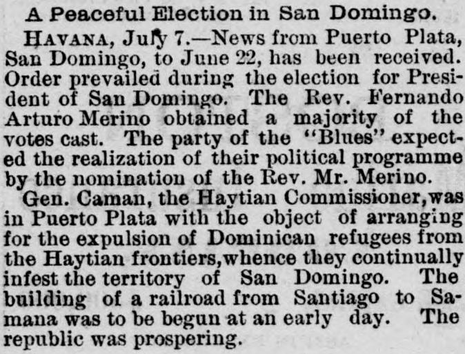

Caman, the Havtian Commissioner,was in Puerto Plata with the object of arranging for the expulsion of Dominican refugees from the Haytian frontiersCaman, el Comisionado haitiano, se encontraba en Puerto Plata con el objeto de arreglar la expulsión de refugiados dominicanos de las fronteras haitianas
The Portland Daily Press. Portland, Me., July 8, 1880. Page 2. Published by N.A. Foster & Co. A daily newspaper, 1862–1921.The Portland Daily Press. Portland, Me., 8 de julio de 1880. Página 2. Publicado por N.A. Foster & Co. Periódico diario, 1862–1921. View the originalVer el original

According to a dispatch from Havana dated July 7, the recent presidential election in San Domingo was conducted peacefully and resulted in a majority of votes for the Rev. Fernando Arturo Merino, whose nomination was expected by the "Blues." General Caman, the Haytian Commissioner, was present in Puerto Plata to arrange for the expulsion of Dominican refugees from the Haytian frontiers. Additionally, the report noted that a railroad from Santiago to Samana was scheduled to begin construction soon and that the republic was prospering.A tenor de un despacho de La Habana del 7 de julio, las recientes elecciones presidenciales en Santo Domingo transcurrieron pacíficamente, consagrando el triunfo del presbítero Fernando Arturo de Meriño, cuya postulación auspiciaba el partido de los «azules». El general Caman, delegado haitiano, asistió a Puerto Plata para concertar la expulsión de asilados dominicanos de la línea divisoria. Informóse asimismo del próximo inicio de las obras del ferrocarril entre Santiago y Samaná en medio del florecimiento que experimenta el país.
FULL TEXT:TEXTO COMPLETO:
WEST INDIES.INDIAS OCCIDENTALES.
A Peaceful Election in San Domingo.Una elección pacífica en Santo Domingo.
HAVANA, July 7.--News from Puerto Plata, San Domingo, to June 22, has been received. Order prevailed during the election for President of San Domingo. The Rev. Fernando Arturo Merino obtained a majority of the votes cast. The party of the "Blues" expected the realization of their political programme by the nomination of the Rev. Mr. Merino.LA HABANA, 7 de julio.—Noticias de Puerto Plata, Santo Domingo, hasta el 22 de junio, han sido recibidas. El orden prevaleció durante la elección para Presidente de Santo Domingo. El Reverendo Fernando Arturo Merino obtuvo una mayoría de los votos emitidos. El partido de los «Blues» esperaba la realización de su programa político mediante la nominación del Reverendo Sr. Merino.
Gen. Caman, the Haytian Commissioner, was in Puerto Plata with the object of arranging for the expulsion of Dominican refugees from the Haytian frontiers, whence they continually infest the territory of San Domingo. The building of a railroad from Santiago to Samana was to be begun at an early day. The republic was prospering.El general Caman, el Comisionado haitiano, estaba en Puerto Plata con el objeto de arreglar la expulsión de refugiados dominicanos de las fronteras haitianas, desde donde continuamente infestan el territorio de Santo Domingo. La construcción de un ferrocarril desde Santiago a Samaná debía comenzar en fecha temprana. La república estaba prosperando.